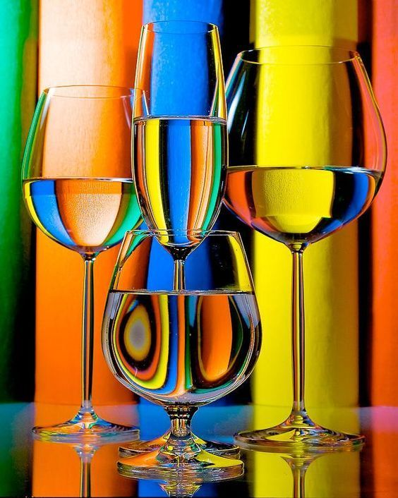
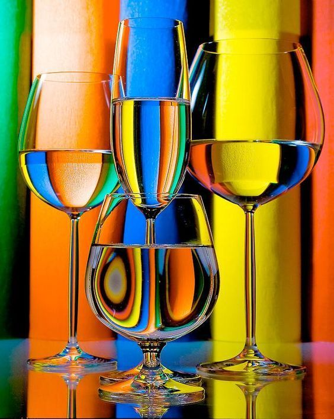

О нас
 

Сеть специализированных магазинов «In vino» - это более 1500 наименований вин и крепкого алкоголя, напитки известных брендов, эксклюзив и новинки по весьма привлекательным ценам. Это широкий выбор и индивидуальный подход к клиентам. 20 магазинов уже открыты по всей стране. «In vino» - это больше, чем просто хороший выбор. «In vino» - это философия вина, которая вобрала в себя традиции изготовления, хранения и потребления великолепных напитков. Ведь мало купить вино. Важно им насладиться, получить удовольствие, открыть для себя что-то новое. Поэтому в наших магазинах не просто предлагают приобрести вино и крепкий алкоголь. Сомелье и кависты помогут выбрать тот напиток, который нужен для определенного момента или мероприятия: шумной корпоративной вечеринки, тихого вечера для двоих. Особое внимание и сервис – для владельцев ресторанов и кафе, желающих получить эксклюзивные напитки или сделать специальный заказ. «In vino» поможет воплотить это желание в жизнь с максимальной быстротой и комфортом и сделать винные карты ваших заведений почти произведением искусства. Кстати, для комфорта и удобства посетителей в части магазинов «In vino» действуют бары, где можно попробовать напиток, который вы хотите приобрести. Чтобы удостовериться в правильном выборе.